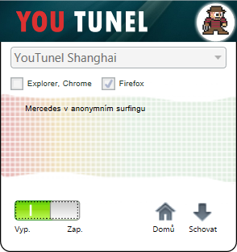
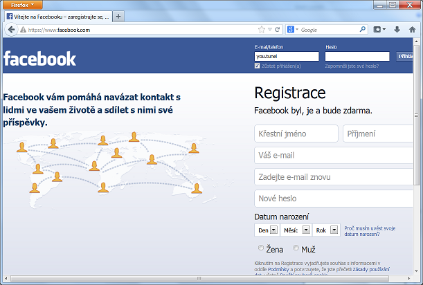

Pomocí YOUTUNELU můžeš prohlížet obsah všech stránek, které jsou ve vaší síti blokované. Veškerý tok dat přes youtunel je šifrován, takže se nemusíš obávat, že tě někdo kontroluje
1: Zaregistruj se a stáhni si YouTunelPutty 2.0
Registrace funguje tak, že si na facebooku přidáš YouTunel mezi své přátele.
Poté tě ověříme, což může trvat i několik hodin. Následně ti prostřednictvím facebooku zašleme odkaz na YouTunelPutty, přihlašovací adresu, jméno a heslo.
Než se však zaregistruješ přečti si pravidla.
2:Otevři YouTunelPutty 2.0, vyber browser a zapni tunel
Spusť YouTunelPutty z lokálního disku nebo z USB flash disku, vyber prohlížeč a otevři šifrovaný tunel.

3: Hotovo. Spusť prohlížeč a surfuj....

4: Web proxy
Pomocí youtunelu můžeš surfovat i bez youtunel putty. Více informací získáš po registraci